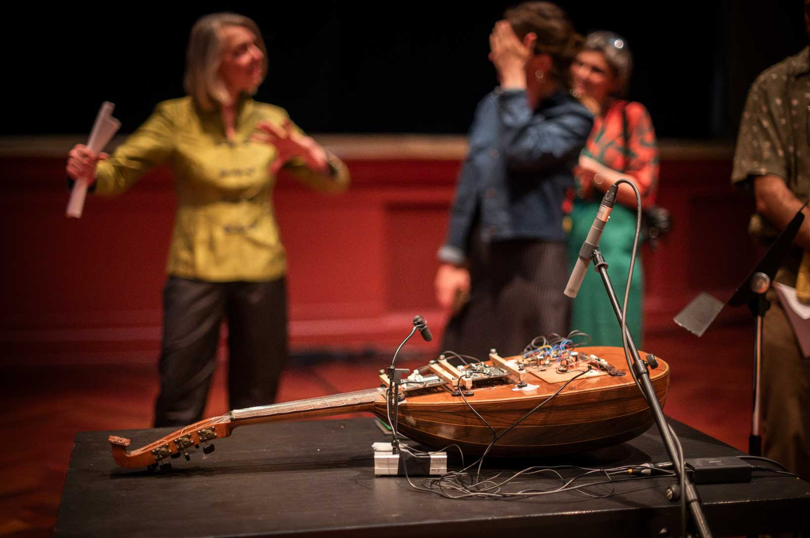

august 24/25
Elisabeth Smalt, viola
Reinier van Houdt, keyboard instruments
Marianne Schuppe, voice, composition
NL - Orgelpark Amsterdam
august 18-22
Klangraum Düsseldorf
Himmelgeisterstr. 107g
40225 Düsseldorf
rencontre de la création musicale GMEA
June 30–July 2
Abbaye de Sylvanès, France
Symposion Le Puid
June 25–28
88210 Le Puid, France
31. Mai, 18.30
in der Ausstellung derive von Anne-Do Hubert
Kraftstr 11, 4058 Basel
Alice Belugou, Lukas Huber, Marianne Schuppe
March 27, 2026, Theatergarage Basel
March 30, 2026, Theater Lübeck
Aus dem Zeltbuch - Marianne Schuppe, Deborah Walker
Occam River XXIX - Eliane Radigue
March 30, 2026
elsewhere records
Denis Schuler, composition
Juliet Fraser, voice
Marianne Schuppe, voice
Clara Levy, violin
February 10-12, 2026
GMEM Marseille
2025
neue Textveröffentlichung im Klingental Verlag
Lesung Sonntag, 7.12. 19h
Klingentalstrasse 72, 4057 Basel
Samstag, 15.11.25, 20h30
Kammeroper von und mit Lukas Huber, Alice Belugou, Marianne Schuppe, Stimmen
ignm Zürich, Kunstraum Walcheturm
Kanonengasse 20, 8004 Zürich
November 1, 8pm
Marianne Schuppe, voice, lute, bows
and
Marina Tantanozi, flute, bass flute
Frantz Loriot, viola
Philipp Eden, prepared piano, objects
Musikatelier Warteck
Burgweg15, 4058 Basel
August 28-31
Yannick Guédon (BE)
Sébastien Roux (F)
Marianne Schuppe (CH)
Stefan Thut (CH)
Deborah Walker (D)
Le Puid, France
Samstag, 24.5.25, 20h
Fachwerk Allschwil
Kammeroper von und mit Lukas Huber, Alice Belugou, Marianne Schuppe, Stimmen
Dienstag, 20.5.25, 20h
Gare du Nord Basel
Kammeroper von und mit Lukas Huber, Alice Belugou, Marianne Schuppe, Stimmen
Sonntag, 18.5.25, 11h Klosterkirche Sursee
Sonntag, 18.5.25, 17h Kapelle Ermensee
Stefanie Erni und Marianne Schuppe, Stimmen
Montag, 5.5.25, 19h
Zwinglikirche Biel-Bözingen
Ensemble Voce, Stimmen
Sonntag, 27.4.25, 16h
Kirche Küstrinchen, D - 17279 Küstrinchen
Dienstag, 11.2.25, 20h30
Marianne Schuppe, voice
Deborah Walker, cello
Doppelkonzert mit Yannick Guédon, solo voice
KM 28
Karl-Marx-Straße 28 12043 Berlin
Samstag, 25.1.25, 19h30
neue Textpublikation im Verlag Klingenthal
Lesung
Klingentalstr. 72, 4057 Basel
2024
Eliane Radigue / Walker/Schuppe
Marianne Schuppe, voice
Deborah Walker, Cello
November 2
Festival Zoom in
Große Reithalle Bern
Residenz GMEA
with Stefan Thut
October 20-25
Albi, France
solo, 27.September
Lautpoesiefestival Literaturhaus Freiburg
solo, 21. September, 17 Uhr
Maison 44, Steinenring 44, 4051 Basel
Ensemble Voce
22. September, 17h00
Predigerkirche, Basel
Ensemble Voce
15. September 16h00
Klosterkirche, Ilanz CH
Stefanie Erni, voice
Marianne Schuppe, voice
21. Juni, 20h
Atelierkonzert Alemannengasse 44 4058 Basel
Ensemble Voce
26. Mai 17h00
Kirche Ligerz, CH
Performance of all 7 parts with 7 choirs and soloists
May 26,10am - 10 pm
Pauluskirche Basel
ignm Basel
Stefanie Erni and Marianne Schuppe, Schuppe, voices
Festival Archipel, Genève
April 21, 7 pm, 2024
Théâtre Pitoeff, Genève
premiered and commissioned by Festival Archipel, Genève 
April 14, 7 pm, 2024
Théâtre Pitoeff, Genève
{kind=link}
2023
ruht nicht aus,
Marianne Schuppe, voice & piano
Dezember 2023
https://wandelweiser.de/_e-w-records/_ewr-catalogue/ewr2304.html
Konzert und Buchpräsentation colline en air,
Marianne Schuppe, Stefanie Erni, Stefan Thut, Andrea Wolfensberger
8.11.2023 19.30 Uhr
Gare du Nord Basel
Erscheinungsdatum der Buchveröffentlichung: colline en air; mit Zeichnungen von Andrea Wolfensberger
30. Oktober 2023
Edition Howeg Zürich
Photo: Vincent Hofmann
{kind=link}
for voice and two instrumensts
October 21, 2023
Portland, Oregon
extradition
Stefanie Erni und Marianne Schuppe, Stimmen
Atelierkonzert zum 30 jährigen Juniläum Werkraum Warteck
Sonntag, 17.9. 11 Uhr
Burgweg 15, 4058 Basel
Portrait von Thomas Meyer in der Septemberausgabe von Jazzn’more, Ausgabe 05-2023, Seite 54
poetry journal Luigi Ten Co Issue no.3,
August 23
Colorado
von Eliane Radigue
sowie Aus dem Zeltbuch von Walker/Schuppe (UA)
26. April 20h30
Kunstraum Walcheturm, Zürich
ignm Zürich
Stefan Thut, Marianne Schuppe
25. März
Zieblandstraße 45, 80798 München
Klang im Dach, München
Stefan Thut, Violoncello
Marianne Schuppe, Stimme
12. Februar 19h00, 2023
Theater Delly, Gerberngasse 11, Solothurn
Doppelkonzert mit Tao Vrhovec Sambolec
Margins of listening (2015)
2022
Stefanie Erni, Stimme
Marianne Schuppe, Stimme
10. Dezember 17h00, 2022
Schlosserei Nenniger, Zürich
Eva-Maria Karbacher, Saxophone
Lara Süss, Stimme, FX
Marianne Schuppe, Stimme
19. November 17h00
Wilde Gallery, Angensteinerstrasse 37, 4052 Basel
Ensemble Voce
13. November 17h00
Konzertzyklus St. Franziskus Zürich
November 6, 19h00
Säulenhalle Solothurn
October 29th, 20h15
Amsterdam Wandelweiser Festival
Orgelpark Amsterdam
Will Montgomery, Stefan Thut, Emmanuelle Waeckerle, Carol Watts, Silvia Alexandra Schimag, Antoine Beuger, Leni Dipple, Marianne Schuppe
Centre de Livres des artistes
September 8-11
St. Yrieux la Perche, France
Els van Riel, Stefan Thut, Emmanuelle Waeckerle, Antoine Beuger, Marianne Schuppe
August 8-14
Le Puid, France
Stefanie Erni, voice
Marianne Schuppe, voice
10. Juli
Biennale d’Art, sentier des passeurs
F- 88210 Quiex / Le Saulcy
von Marianne Schuppe
Ensemble Voce
Samstag, 2. Juli, 19:30: Stadtkirche, Aarau
Mittwoch, 29. Juni, 19:30: Herz-Jesu-Kirche, Laufen
Sonntag, 26. Juni, 17:00: Kulturkirche am See, Berlin
for and with insub ensemble
19.-21. Juni
recording and performance
Laconnex /GE
Konzeption : Vincent Hofmann und Simon Kindle
Partitur : Lukas Huber und Marianne Schuppe
mit Lukas Huber, Vincent Hofmann, Simon Kindle, Barbara van der Meulen, Marianne Schuppe
17./18. Juni
Kloster Dornach, Amthausstrasse 7, 4143 Dornach
Marianne Schuppe, Stimme
Sergej Tchirkov, Akkordeon
Alfred Zimmerlin, Violoncello
20. Mai 19.30
Maison 44, Steinenring 44, 4051 Basel
Knickse Fäden Windpapier
Marianne Schuppe, Stimme, Laute, Uber-bows
25. März 19.30, 2022
Maison 44, Steinenring 44, 4051 Basel
2021
Thut - Schuppe - Kilchenmann
spielen eigene Stücke
Marianne Schuppe, Stimme
Stefan Thut, Cello
Marc Kilchenmann, Fagott und mikrotonales Glockenspiel
6.Dezember 19 Uhr
Montags um Sieben
Alleestr. 11, 2503 Biel/Bienne
13.November 17 Uhr
Sud, Werkraum Warteck
Burgweg 7, 4058 Basel
Stefanie Erni, Marianne Schuppe
24.Oktober 17 Uhr
Atelier Judith Eckert
Kirchgasse 7, 4118 Rodersdorf
8.-19. September 21, Festival ZeitRäume, Basel
Marianne Schuppe, Stimme
3.-8. August, Klangraum Düsseldorf, Himmelsgeisterstr.107, 40225 Düsseldorf
von Marianne Schuppe
Ensemble Voce
4. Juli, 17h00 Predigerkirche Basel
by Emmanuelle Waeckerlé
with Marie-Cécile Reber, electronics, Emmanuelle Waeckerlé, voice
Stefan Thut, viol, Marianne Schuppe, voice
6. Juni, 19h00 Säulenhalle Solothurn
von Marianne Schuppe
Ensemble voce
5. Juni, 19.30 Predigerkirche Basel
Thut - Schuppe - Kilchenmann
play works by themselves
Marianne Schuppe, voice
Stefan Thut, cello
Marc Kilchenmann, bassoon and microtonal chimes
November 5 Theatergarage Basel
September 3 Kunstraum Walcheturm Zürich
2020
30.10 - 1.11. 2020
Werkstattkonzert der Studierenden
1. November 15h00, Klaus Linder Saal, Leonhardstrasse 6, 4009 Basel
Keynote Hochschule für Architektur Basel FHNW
Masterstudiengang Architektur
29. Mai 2020
Emmanuelle Waeckerle and Marianne Schuppe, composition and voices
Klangraum Düsseldorf, Himmelsgeisterstr.107, 40225 Düsseldorf
27.7-2.8. 2020
Stefanie Erni, Voice, Marianne Schuppe, Voice
Klangbang, Solothurnerstr.4, 4053 Basel
14. Februar 2020
2019
Solo Concert in der Ausstellung von Andrea Wolfensberger
Rotonde, Große Kunstschau, Worpswede
6. Dezember 2019
Bettina Helmrich, Miranda Glickson,
Tanz, Marianne Schuppe, Sprache, Georg Wolf, Kontrabass, Wolfgang Schliemann, Perkussion
Dok 4 Halle, Kassel
28./29./30.November 2019
weitere Werke von Eva- Maria Houben, Karin Rehnqvist, Kassia, Yoko Ono, Meredith Monk u.a.
Chor Superterz, Ltg. Antoine Beuger
Johanneskirche Köln-Brück
17. November 2019
Leo Hofmann und Benjamin van Bebber
mit den Gästen Jürg Kienberger, Alla Poppersoni und Marianne Schuppe,
11. - 20. Oktober 2019
Cabaret Voltaire, Zürich
{kind=link}
für Chöre und Einzelstimmen
in öffentlichen Räumen
10.-19. September 2019
Festival ZeitRäume Basel
heim.art Neufelden,A
mit Antoine Beuger, Jürg Frey, Emmanuelle Waeckerle, Joachim Eckl, Marianne Schuppe
June 23-30, 2019
weitere Werke von Yagüe, Rautavaara, Pärt, Handl, Palestrina u.a.
Ensemble Voce
15.Juni 2019 19.30 Uhr La Collégiale St. Ursanne
16.Juni 2019 17 Uhr Kirche Amsoldingen
17.Juni 2019 19.30 Uhr Predigerkirche Basel
weitere Werke von Eva- Maria Houben, Karin Rehnqvist, Kassia, Yoko Ono, Meredith Monk u.a.
Chor Superterz, Ltg. Antoine Beuger
Epiphaniaskirche Köln-Bickendorf
16. Juni 2019
Marianne Schuppe, Stimme, Marc Kilchenmann, Fagott, Stefan Thut, Violoncello
Münster Bern, Gewölbessal Daniel Heintz
17. Mai 2019
Solo
Dock Basel
25. Januar 2019
solo and duo with Antoine Beuger
cosy nook, London
January 12. 2019
slow songs, nosongs
Cafe Oto, London
January 9, 2019
2018
Musikakademie Basel
26.-28. Oktober 2018
Werkstattkonzert Sonntag, 28.10.
Marianne Schuppe Stimme, Marc Kilchenmann, Fagott, Stefan Thut, Cello
und Antoine Beuger, Stimme
17. Juni 2018
Sotto Voce Vocal Collective, Buffalo NY, 2018
St. John’s Ohio City in Cleveland OH, USA, June 9th
Fairchild Chapel in Oberlin OH , USA, June 8th
Unitarian Universalist Church of Buffalo NY, April 29th
Marianne Schuppe, Stimme, Alfred Zimmerlin, Violoncello
Maison 44, Steinenring 44, 4051 Basel
23. April, 2018
Stefanie Erni, Stimme, Marianne Schuppe, Stimme
Atelier Alemanengasse 44, 4018 Basel
22. April 2018
Ein Gesangsprojekt von Marianne Schuppe mit Schülerinnen des Gymnasiums Oberwil
Gare du Nord, Basel
2. März 2018
Marianne Schuppe, Stimme, Laute, Uber-bows
Festival Zwei Tage Zeit
Theater Rigiblick, Germaniastrasse 99, CH - 8044 Zürich
20. Januar 2018
Marianne Schuppe, Stimme
Rheinisches Landesmuseum Bonn
13. Januar 2018
2017
Marianne Schuppe, Stimme, Laute, Uber-bows
Musikwissenschaftliches Seminar der Universität Basel
18. Dezember 2017
mit Marianne Schuppe
Musikwissenschaftliches Seminar der Universität Baael
6. November 2017
Marianne Schuppe, Stimme, Sylwia Zytynska, Perkussion, Alfred Zimmerlin, Cello
Exploratorium Berlin
19. Oktober 20 Uhr
2016
Hochschule für Musik Basel
9.-11. Dezember 2016
Werkstattkonzert 11. Dezember
Erik Carlson, violin
St. Diego, USA
December 9, 2016
for voice, lute, uber-bows
Huddersfield Contemporary Music Festival
St. Paul’s Hall, Huddersfield, England
November 24, 2016
for voice, lute, uber-bows
Konzertreihe Pavillon Wels, Austria
November 16, 2016
Marianne Schuppe, voice
Helsinki Tulkinnanvaraista Festival
Korjaamo Cultural Factory, Helsinki
November 6, 2016
Sarah Cranfield, soprano, Josten Myburgh, sine-tones
Perth, Australia
October 8, 2016
you and the tube - Subjektive Positionen der Song-Interpretation zwischen den beiden Weltkriegen in ausgewählten Beispielen
Hochschule für Musik Basel
27. September 2016
Antoine Beuger, voice, Josten Myburgh, sine-tones
Klangraum Düsseldorf 2016
August 21, 2016
für Stimmensemble
RAUM, Palmenstr. 4, 4054 Basel
8. Juni 2016
und andere Werke
Sarah Giger, Traversflöte, Marianne Schuppe, Stimme
Musikpodium Zürich, Alte Cigarettenfabrik, Sihlquai 268
27. Mai 2016
101. Atelierkonzert
Atelier Christoph Schiller, Klingentalstr. 72, 4057 Basel
10. Mai 2016
Marianne Schuppe, Stimme
Basel Sinfonietta
Leitung Jonathan Stockhammer
Stadtcasino Basel
24. April 2016
Marianne Schuppe, Stimme
Overbeckgesellschaft Lübeck, 22. Januar 2016
Tinguely Museum Basel, 20. Januar 2016
Kunstraum Walcheturm Zürich, 10. Dezember 2015
2015
Zürcher Hochschule der Künste, 30. November 2015
Archäologische Universität Freiburg i.B., 24. November 2015
Mendelssohn Haus Leipzig, 13. November 2015
Skulpturhalle Basel, 1. November 2015
Marianne Schuppe, Stimme, Antoine Beuger, Flöte, Jürg Frey, Klarinette, Robyn Streb, Viola
Klangraum Düsseldorf
9. August 2015
Marianne Schuppe, Stimme
Musikhochschule Zürich
5. Juni 2015
Regula Konrad, Stimme, Marianne Schuppe, Stimme
GNOM Baden, Berufsfachschule Martinsberg, 23. April 2015
Centre PasqArt Biel/Bienne, 22. April 2015
Maison 44, Basel, 18. Januar 2015
Marianne Schuppe, Stimme, Laute und Uber-Bows
Atelier im Hof, Wilhelmsstr. 21, 42781 Haan
26. Februar 2015
2014
nach Samuel Beckett
mit Serena Wey und Marianne Schuppe
Theatergarage Basel
4. und 6. Dezember 2014
8., 9., 10. November 2013
30., 31. Oktober 2013
Marianne Schuppe, Stimme, Laute, Uber-Bows
Symposium performing voice Hochschule der Künste Bern
Dampfzentrale Bern
27. November 2014
Markus Eichenberger im Gespräch mit Thomas Meyer und Marianne Schuppe
Alte Spinnerei Suhr
26. November 2014
Marianne Schuppe, Stimme, Laute, Uber-Bows
Theatergarage Basel, 4.,7.,8,November 2014
in the exhibition of Hanne Tyrmi, Haugar Verstfold Kunstmuseum, Tonsberg/Norway
Marianne Schuppe und Franz Dodel
Maison 44 Basel
3. Mai 2014
Regula Konrad, Stimme, Marianne Schuppe, Stimme
Maison 44 Basel
11. April 2014
Marianne Schuppe, Stimme
Malzsilo, Werkraum Warteck Basel
10. April 2014
Andrea Wolfensberger (Bild) und Marianne Schuppe (Ton)
Kunstmuseum Solothurn Werkhofstrasse 30, 4500 Solothurn
22. 2.-27. 4. 2014
2013
eine Musik für Stimmen zum Stummfilm La chute de la maison Usher (Jean Epstein 1928)
Theatergarage Basel, 11. Februar 2014
Filmpodium Zürich Zürich, 5. November 2013
mit Ute Wassermann und Marianne Schuppe, Stimmen
Exploratorium Berlin
14. Dezember 2013
Musik von Giacinto Scelsi und Hildegard von Bingen
Brigitte Hillmer, Wort, Marianne Schuppe, Gesang
Predigerkirche Basel
9. Dezember 2013
Marianne Schuppe, Stimmme, Dias&Riedweg, Video
Villa de 25 de Agosto, Uruguay
August 25, 2013
Regula Konrad und Marianne Schuppe, Stimmen
R.A.U.M, Palmenstr.4, 4054 Basel, 24. Mai 2013
Alte Papiermühle, Benkenstr.61, 5024 Küttigen, 25. Mai 2013
Ensemble Diagonal für Zeitgenössische Musik der Hochschule Basel,
Leitung Jürg Henneberger
Ulrike Andersen und Marianne Schuppe, Stimmen
Cornelius Bohn, Live-Elektronik
Volkshaus Basel
19. und 20. März 2013
OPENING Festival für Aktuelle Klangkunst Trier
Kultur-und Kommunikationszentrum Trier, 1. Februar 2013
Stichting Logos, Gent (B), January 30, 2013
2012
Konzert und Lecture
Hochschule der Künste Bern
27. November 2012
zoom in Festival für Improvisierte Musik
Berner Münster, Bern, 13.Oktober 2012
Kirche Deiderode, 7.Oktober 2012
Kirche Hubenrode / Witzenhausen, 6. Oktober 2012
raum 22, Kilchberg BL
Soesterkirkene pa gran, Oslo, August 18, 2012
Villa Renata, Basel, 18. Mai 2012,
Moments musicaux, Aarau, Sonntag, 13. November 2011
Hans Koch, Bassklarinette, Jonas Kocher, Akkordeon, Hans-Jürg Meier, akustische Installation
Dorothea Rust, Tanz, Marianne Schuppe, Stimme, Nadine Schwarz, Tanz, Ivan Wolfe, Tanz
GNOM Baden, Haus Martinsberg, Berufsfachschule Baden BBB,
17. Juni 2012
Khoom for 7 Instruments and Voice
Pranam I for 12 Instruments, Voice and Tape
Ensemble Phönix Basel, Leitung Jürg Henneberger, Marianne Schuppe, Stimme
Musée d’Art moderne et contemporain Strassbourg
9. Februar 2012